Etkileşimli Ders Deneyimi Panosu nasıl kullanılır?
Grup 3 · YG-Proje1-Grup3
Uygulama adresihttps://ders-ogrenci-bilgi-ekip.web.app
Kimler içinUygulamayı kullanacak öğrenciler
İletişimprojemeil@gmail.com
Tarih / sürüm10 Kasım 2026 · Sürüm 1.1
İçindekiler
1Ders Panosu nedir?
2Başlarken: kayıt olma, giriş yapma, şifre sıfırlama
3Ekranı tanıyalım: menü, tema ve çıkış
4Ana Sayfa
5Derslerim, ders ve hafta detayı
6Görevlerim
7Profil
8Gizlilik ve kişisel verileriniz
9Telefonda kullanım
10Klavyeyle kullanım ve erişilebilirlik
11Sık sorulan sorular ve sorun giderme
Bu doküman hakkında: Ekran görüntüleri 4 Kasım 2026'daki sürümden (Görevlerim sayfası, görev
formu ve takvim 10 Kasım 2026'daki yeni görünümden), örnek bir öğrenci hesabıyla alınmıştır. Sizin ekranınızda dersler, görevler ve sayılar kendi ilerlemenize göre
farklı görünecektir. Görüntülerin üstündeki sarı "Demo modu" şeridi yalnızca deneme sürümünde
çıkar; gerçek sitede görünmez.
1Ders Panosu nedir?
Ders Panosu, aldığınız derslerin haftalık içeriklerini, her haftanın öğrenme hedeflerini ve
görevlerini tek bir yerde toplayan bir web uygulamasıdır. Görevlerinizin durumunu
işaretledikçe ilerlemeniz bütün sayfalarda anında güncellenir.
Tarayıcıda çalışır: Kurulum gerekmez. Bilgisayarda, tablette ve telefonda güncel bir tarayıcıyla (Chrome, Edge, Firefox, Safari) https://ders-ogrenci-bilgi-ekip.web.app adresine girmeniz yeterlidir.
İlerlemeniz size özeldir: İşaretlediğiniz görevler hesabınızda saklanır; başka bir cihazdan girdiğinizde de aynı durumu görürsünüz.
Görev durumları üç tanedir:
Durum
Simgesi
Anlamı
Yapılacak
Boş halka, gri
Göreve henüz başlamadınız. Yeni görevler bu durumda başlar.
Devam ediyor
Yarısı dolu halka, turuncu
Görev üzerinde çalışıyorsunuz.
Tamamlandı
Onay işaretli daire, yeşil
Görevi bitirdiniz; ilerlemenize sayılır.
Süresi geçti
Kırmızı halka
Son tarihi geçmiş ama bitmemiş görev. Ayrı bir durum değildir; görev bitince kırmızı uyarı kalkar.
2Başlarken
2.1 Kayıt olma
https://ders-ogrenci-bilgi-ekip.web.app adresini açın. Giriş ekranı gelir; altındaki Kayıt olun düğmesine basın.
Ad soyad alanına adınızı ve soyadınızı yazın.
Öğrenci e-postası alanına üniversitenin verdiği öğrenci adresinizi yazın: öğrenci numaranız + @ogr.ktu.edu.tr (ör. 123456@ogr.ktu.edu.tr). Başka adreslerle kayıt olunamaz.
Şifre alanına güçlü bir şifre yazın. Kutunun altındaki çubuk şifrenin gücünü gösterir; yalnızca Güçlü şifreyle kayıt olunur. Göz simgesine basarak yazdığınızı görebilirsiniz.
Gizlilik ve KVKK Aydınlatma Metni'ni okudum kutusunu işaretleyin. Bağlantıya basarsanız metin yeni sekmede açılır.
Kayıt ol'a basın. Hesabınız açılır ve doğrudan Ana Sayfa'ya geçersiniz.
Güçlü şifre kuralı: En az 10 karakter olmalı ve küçük harf, büyük harf, rakam ve simgeden (ör. ! ? - #) en az üçünü içermelidir. Örnek biçim: Ders-Panosu-2026. E-posta hesabınızın şifresini kullanmayın; bu uygulamaya özel bir şifre belirleyin.
Şekil 1 — Doğru doldurulmuş kayıt formu: şifre gücü "Güçlü"
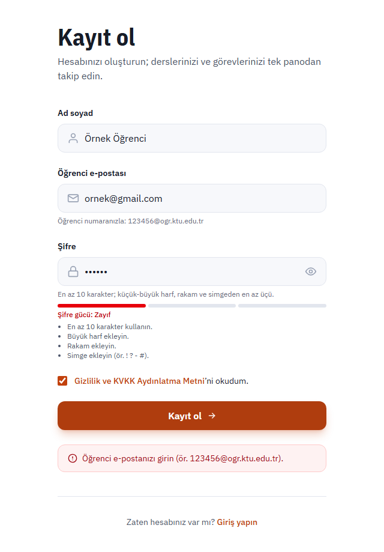
Şekil 2 — Zayıf şifrede eksik kurallar listelenir; öğrenci e-postası olmayan adres kabul edilmez
2.2 Giriş yapma
Giriş ekranında E-posta ve Şifre alanlarını doldurun.
Giriş yap'a basın. Giriş yapmadan bir sayfaya gitmeye çalıştıysanız, girişten sonra doğrudan o sayfa açılır.
E-posta ya da şifre yanlışsa "E-posta veya şifre hatalı." uyarısı çıkar. Güvenlik nedeniyle hangisinin yanlış olduğu söylenmez. Çok sayıda hatalı denemeden sonra bir süre beklemeniz istenebilir.
Şekil 3 — Giriş ekranı
2.3 Şifremi unuttum
Giriş ekranında şifre kutusunun altındaki Şifremi unuttum bağlantısına basın.
Kayıtlı e-posta adresinizi yazıp Bağlantı gönder'e basın.
E-posta kutunuzu açın. noreply@ders.c1h4n.com adresinden bir şifre sıfırlama e-postası gelir.
E-postadaki bağlantıya basın, açılan sayfada yeni şifrenizi yazın.
Ders Panosu'na dönüp yeni şifrenizle giriş yapın.
E-posta gelmediyse: Birkaç dakika bekleyin ve Gereksiz (Spam / Junk) klasörüne bakın. Okul e-postanız Outlook'ta açılıyorsa gelen kutusunun üstündeki Diğer sekmesine de bakın. E-postayı orada bulursanız "Gereksiz değil" olarak işaretleyin; sonrakiler gelen kutunuza gelir.
Güvenlik nedeniyle, yazdığınız adrese kayıtlı bir hesap olup olmadığı söylenmez; her durumda aynı mesaj görünür. Yeni bir bağlantı istediğinizde eskisi geçersiz olur, en son gelen e-postayı kullanın.
Giriş yapmışken şifrenizi değiştirmek isterseniz Profil sayfasındaki Şifre sıfırlama bağlantısı gönder düğmesini kullanabilirsiniz (Bölüm 7).
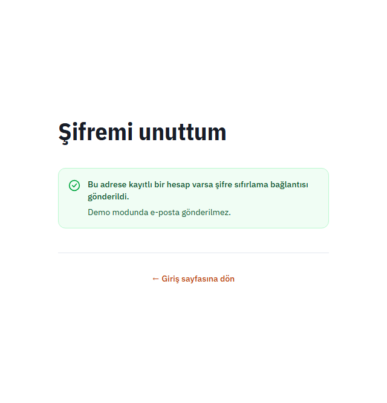
Şekil 4 — Bağlantı gönderildiğinde çıkan onay
3Ekranı tanıyalım
Giriş yaptıktan sonra ekranın solunda kenar çubuğu (menü), sağında ise açık olan sayfa durur.
Kenar çubuğundaki öğe
Ne işe yarar?
Ana Sayfa, Derslerim, Görevlerim, Profil
Sayfalar arasında geçiş. Bulunduğunuz sayfa açık turuncu zeminle vurgulanır.
Kullanıcı kartı
Adınızın baş harfleri, adınız ve e-postanız.
Ay / güneş simgesi
Aydınlık ve karanlık tema arasında geçer; seçiminiz hatırlanır. "Cihazın temasını izle" seçeneği Profil'dedir.
Gizlilik ve KVKK
Kişisel verilerinizin nasıl işlendiğini anlatan metni açar.
Çıkış yap
"Çıkış yapmak istediğinize emin misiniz?" sorusunu sorar. Evet, çıkış yap derseniz giriş ekranına dönülür; Hayır ya da Esc ile vazgeçersiniz.
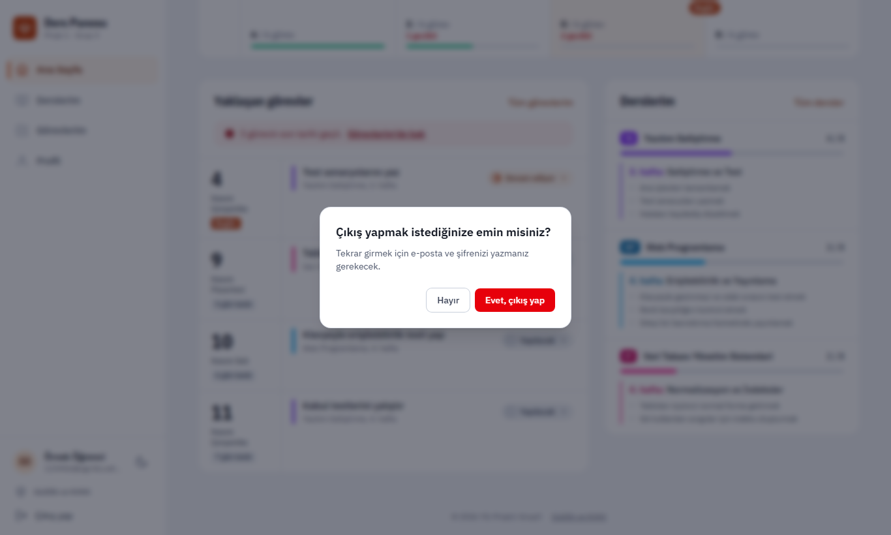
Şekil 5 — Çıkış yapmadan önce sorulan onay
4Ana Sayfa
Ana Sayfa, bütün derslerinizin dönem içindeki durumunu tek bakışta gösterir.
Şekil 6 — Ana Sayfa
4.1 Dönem çizelgesi
Sütunlar haftalar, satırlar derslerdir. Her ders kendi rengindeki kod rozetiyle (ör. YG, WP, VT) gösterilir.
Her hücrede o dersin o haftadaki görevleri durum simgeleriyle durur (Bölüm 1'deki tablo). Hücreye basarsanız o haftanın sayfası açılır.
İçinde bulunduğunuz hafta turuncu zeminle ve Bu hafta etiketiyle, bugünün tarihi turuncu Bugün çizgisiyle işaretlidir. Sütunun altında o hafta kaç görevin bittiği ve kaçının geciktiği yazar.
Sağ üstteki iki çubuk Tamamlanan görev oranını dönemin Geçen süresiyle karşılaştırır. Tamamlanan çubuk geride kalıyorsa takvimin gerisindesiniz demektir.
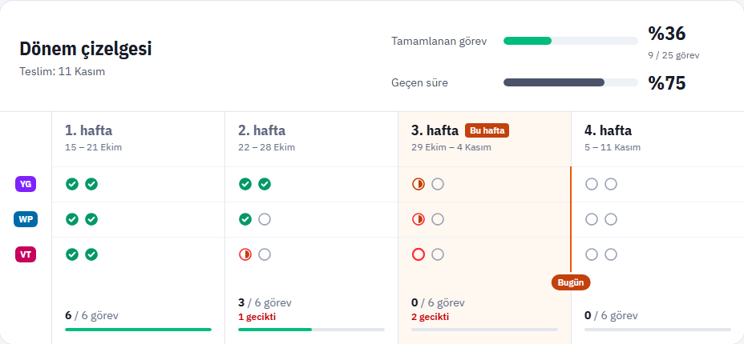
Şekil 7 — Dönem çizelgesi: 3. hafta "Bu hafta", kırmızı halkalar geciken görevler
4.2 Yaklaşan görevler
Son tarihi yaklaşan görevler bir ajanda gibi güne göre sıralanır: solda gün ve kalan süre,
sağda o gün teslim edilecek görevler. Görevin durumunu buradan da değiştirebilirsiniz;
tamamlanan görev listeden çıkar. Son tarihi geçmiş görev varsa listenin üstünde kırmızı bir
uyarı ve Görevlerim'de bak bağlantısı çıkar.
4.3 Derslerim kutusu
Her dersin ilerleme çubuğunu, bu haftasını ve o haftanın öğrenme hedeflerini gösterir.
Haftanın adına basarak hafta sayfasına geçebilirsiniz.
5Derslerim, ders ve hafta detayı
5.1 Derslerim
Üstteki grafik her derste kaç görevin tamamlandığını, devam ettiğini ve yapılacağını gösterir.
Ders ara kutusuna ders kodu, adı ya da öğretim elemanı yazarak; Tümü / Başlanmadı / Devam ediyor / Tamamlandı düğmeleriyle dersleri süzebilirsiniz.
Her ders kartında dersin rengi, kodu, adı, öğretim elemanı, ilerleme çubuğu ve bu haftası vardır. Görevleri göster ile dersin görevlerini kartın içinde açabilir, kartın başlığına basarak ders sayfasına gidebilirsiniz.
Şekil 8 — Derslerim
5.2 Ders detayı
Dersin renkli kapağında açıklaması ve genel ilerlemesi yer alır. Altındaki haftaların akışı
dersin haftalarını sırayla gösterir. Her hafta kartında bir etiket bulunur:
Tamamlandı (bütün görevleri bitti), Şu anki hafta (bitmemiş ilk hafta) ya da
Sırada. Hafta kartına basarak o haftanın sayfasını açın.
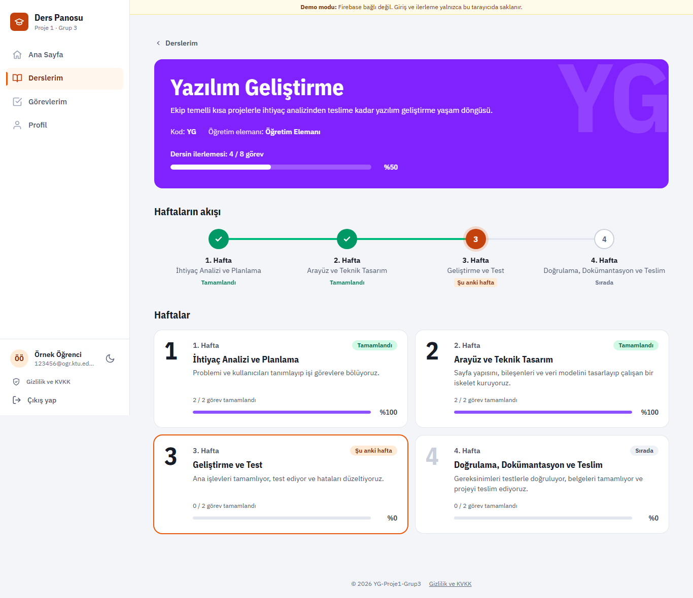
Şekil 9 — Ders detayı: kapak, haftaların akışı ve hafta kartları
5.3 Hafta detayı
Görevler: Haftanın görevleri; her satırda son tarih, etiketler ve durum seçicisi vardır.
Bu haftanın ilerlemesi ve Öğrenme hedefleri sağdaki kutulardadır.
Sayfanın altındaki Önceki hafta / Sonraki hafta kartlarıyla haftalar arasında geçebilir, en üstteki geri bağlantısıyla derse dönebilirsiniz.
Şekil 10 — Hafta detayı
6Görevlerim
Bütün derslerinizdeki görevler ve kendi eklediğiniz görevler bu sayfada tek listede durur.
6.1 Görevin durumunu değiştirmek
Görevin sağındaki durum rozetine (ör. Yapılacak) basın.
Açılan listeden Yapılacak, Devam ediyor ya da Tamamlandı'yı seçin.
Değişiklik hemen kaydedilir; Ana Sayfa'daki çizelge, ders kartları ve ilerleme çubukları aynı anda güncellenir. İnternet bağlantınız koptuğu için kaydedilemezse görev eski durumuna döner ve bir uyarı çıkar.
6.2 Aramak ve süzmek
Görev ara: başlık, açıklama ya da etikette geçen bir kelime yazın; liste siz yazdıkça daralır. Küçük yazım hataları ve şapkalı harfler sorun olmaz.
Ders ve Hafta seçicileri: yalnızca bir dersin ya da haftanın görevlerini gösterir.
Tümü / Yapılacak / Devam ediyor / Tamamlandı düğmeleri: duruma göre süzer; her düğmede o durumdaki görev sayısı yazar.
Filtreleri sıfırlamak için Filtreleri temizle'ye basın.
Ders görevleri dışındaki işlerinizi (ör. bir kitap almak, sunuma hazırlanmak) de takip edebilirsiniz.
Sağ üstteki + Görev ekle'ye basın.
Başlık yazın (zorunlu, en fazla 100 karakter).
İsterseniz Açıklama (en fazla 500 karakter), Ders ve Son tarih seçin. Derse bağlamak istemiyorsanız "Derse bağlı değil" olarak bırakın. Tarihi kutuya yazabilir ya da kutunun sağındaki takvim simgesine basıp takvimden seçebilirsiniz.
Görevi ekle'ye basın. Görev listeye "Kendi görevim" etiketiyle eklenir.
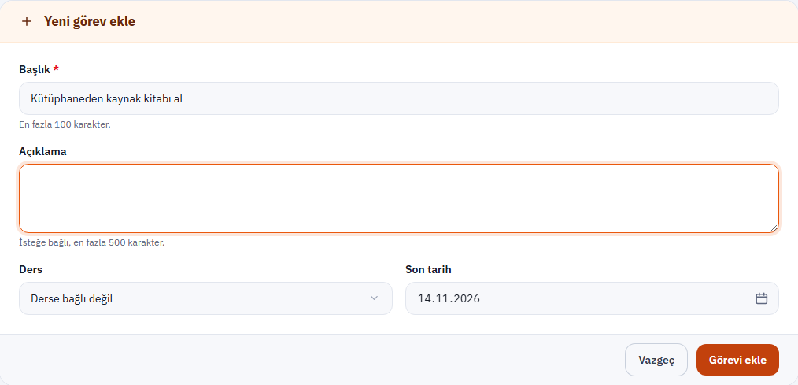
Şekil 12 — Yeni görev ekleme formu
Takvimden tarih seçmek:Son tarih kutusunun sağındaki takvim simgesine
(Takvimden seç) basınca takvim açılır. Üstteki ok düğmeleriyle önceki ve sonraki aya
geçersiniz; hafta Pazartesi ile başlar. Bugünün tarihi çerçeveli, seçtiğiniz gün turuncu dolu gösterilir.
Bir güne basınca tarih kutuya yazılır ve takvim kapanır. Altındaki Bugün düğmesi
bugünün tarihini seçer, Temizle düğmesi seçili tarihi siler (görev tarihsiz kalır).
Takvimin dışına basarsanız ya da Esc'e basarsanız seçim değişmeden kapanır.
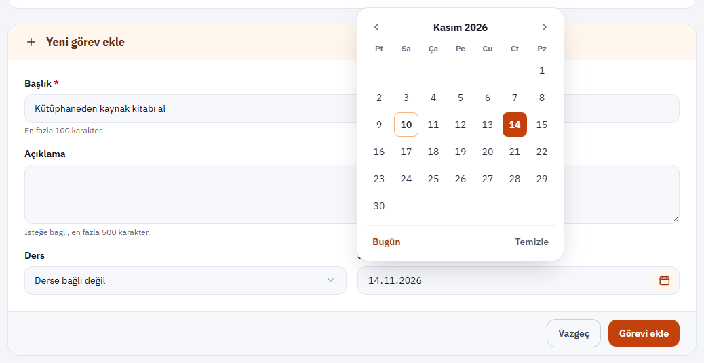
Şekil 13 — Son tarih için takvimden gün seçimi
6.4 Kendi görevinizi düzenlemek ya da silmek
Kendi eklediğiniz görevlerin altında Düzenle ve Sil
düğmeleri vardır. Silmeden önce "Bu görev silinsin mi?" diye sorulur. Ders görevleri
düzenlenemez ve silinemez; yalnızca durumları değiştirilebilir. En fazla 100 kendi göreviniz olabilir.
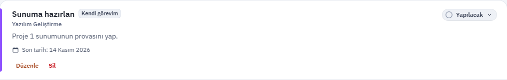
Şekil 14 — "Kendi görevim" etiketli görev ve Düzenle / Sil düğmeleri
7Profil
Bölüm
Ne yapabilirsiniz?
Hesap bilgileri
Adınızı ve e-postanızı görürsünüz. Şifre sıfırlama bağlantısı gönder ile e-postanıza şifre değiştirme bağlantısı gelir (Bölüm 2.3'teki adımlar).
Tema
Aydınlık (her zaman açık renkler), Karanlık (her zaman koyu renkler) ya da Sistem (cihazınızın temasını izler) seçin. Seçiminiz bu tarayıcıda hatırlanır.
İstatistikler
Tamamlanan ve devam eden görev sayısı, aktif ve tamamlanan ders sayısı, görev durumlarının dağılımı ve derslere göre ilerleme.
Hesabı sil
Hesabınızı ve bütün ilerlemenizi kalıcı olarak siler (aşağıdaki uyarıya bakın).
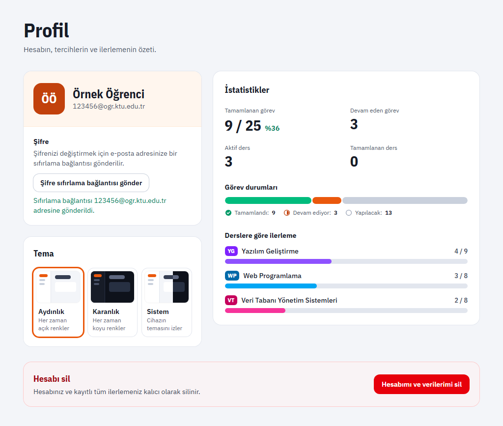
Şekil 15 — Profil: şifre sıfırlama bağlantısı gönderildi
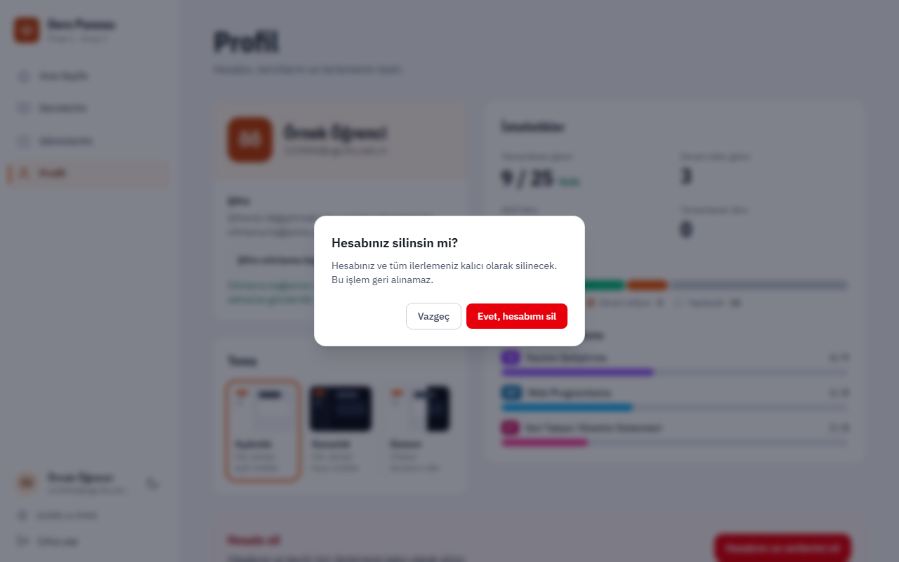
Şekil 16 — Hesap silmeden önce sorulan onay
Hesabı silmek geri alınamaz.Hesabımı ve verilerimi sil'e bastığınızda "Hesabınız silinsin mi?" diye sorulur. Evet, hesabımı sil derseniz önce görev durumlarınız ve kendi görevleriniz, ardından hesabınız silinir ve giriş ekranına dönülür. Uzun süredir giriş yapmadıysanız güvenlik için önce çıkış yapıp yeniden giriş yapmanız istenebilir.
8Gizlilik ve kişisel verileriniz
Hangi veriler tutulur? Ad soyad, e-posta, şifre (geri çözülemeyecek biçimde; ekip göremez), görevlerinizin durumu ve kendi eklediğiniz görevler. Tema tercihiniz yalnızca tarayıcınızda kalır.
Nerede tutulur? Google'ın Firebase hizmetlerinde; bu sunucular yurt dışında bulunabilir. Reklam veya izleme çerezi kullanılmaz.
Ne kadar süre? Hesabınız açık olduğu sürece; en geç 31 Ocak 2027'de bütün hesaplar ve veriler silinir.
Haklarınız: Verilerinizle ilgili bilgi isteme, düzeltme ve silme gibi taleplerinizi kayıtlı e-postanızdan projemeil@gmail.com adresine yazabilirsiniz; en geç 30 gün içinde yanıtlanır. Hesabınızı Profil'den kendiniz de silebilirsiniz.
Ayrıntılar için kenar çubuğundaki ya da sayfa altındaki Gizlilik ve KVKK bağlantısını açın; sayfanın başındaki Geri dön ile geldiğiniz yere dönersiniz.
9Telefonda kullanım
Uygulama telefonda da aynı özelliklerle çalışır. Dar ekranlarda kenar çubuğu gizlenir; sol
üstteki ☰ düğmesiyle menü soldan kayarak açılır. Bir sayfa seçtiğinizde, arka plana
dokunduğunuzda ya da ✕'e bastığınızda menü kapanır. Tema düğmesi üst barın sağındadır.
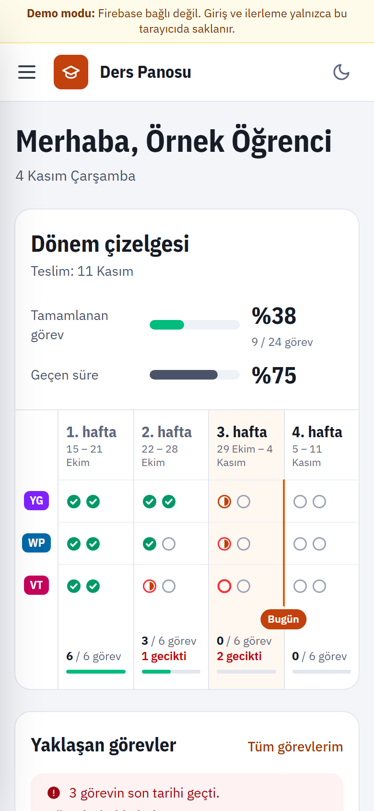
Şekil 17 — Ana Sayfa
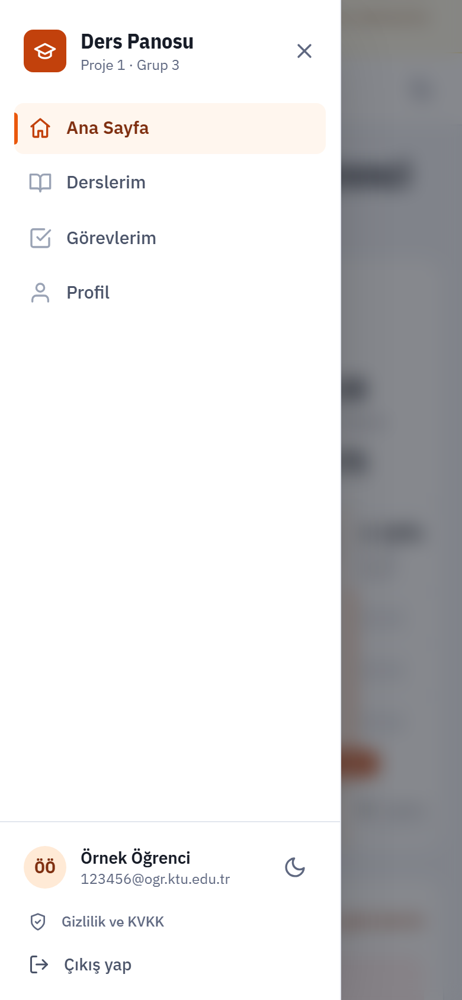
Şekil 18 — Açılan menü
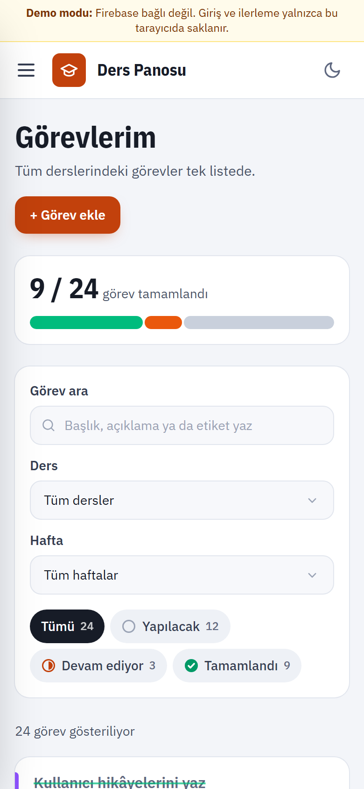
Şekil 19 — Görevlerim
10Klavyeyle kullanım ve erişilebilirlik
Tab ile bağlantılar, düğmeler ve form alanları arasında ilerleyin; odaklanan öğe turuncu bir çerçeveyle gösterilir. Shift+Tab geri gider.
Sayfa açıldığında ilk Tab'da çıkan İçeriğe geç bağlantısı menüyü atlayıp doğrudan sayfa içeriğine götürür.
Enter bağlantıları ve düğmeleri çalıştırır; durum seçicilerde ok tuşlarıyla seçim yapılır.
Takvimde ok tuşları gün gün, Home / End haftanın başına ve sonuna, Page Up / Page Down bir ay (Shift ile bir yıl) geri ve ileri götürür; Enter günü seçer. Tarih kutusuna yazarken Alt+↓ takvimi açar.
Esc açık menüyü ya da onay penceresini kapatır. Onay pencerelerinde ilk seçili düğme her zaman vazgeçme düğmesidir; yanlışlıkla Enter'a basmak bir şey silmez.
Durumlar yalnızca renkle değil, simge şekliyle ve yazıyla da gösterilir. Ekran okuyucular hata mesajlarını, eklenen/silinen görevleri ve şifre gücünü sesli okur.
Cihazınızda "hareketi azalt" ayarı açıksa menü ve sayfa geçiş animasyonları kapanır.
11Sık sorulan sorular ve sorun giderme
Sorun
Ne yapmalı?
Kayıt olurken "Öğrenci e-postanızı girin" uyarısı çıkıyor.
Yalnızca öğrenci-numarası@ogr.ktu.edu.tr biçimindeki adreslerle kayıt olunur (ör. 123456@ogr.ktu.edu.tr). Gmail gibi kişisel adresler kabul edilmez.
"Şifre yeterince güçlü değil" uyarısı çıkıyor.
Şifre gücü çubuğunun altındaki eksikleri tamamlayın: en az 10 karakter ve küçük harf, büyük harf, rakam, simgeden en az üçü.
"Bu e-posta adresiyle zaten bir hesap var" uyarısı çıkıyor.
Daha önce kayıt olmuşsunuz. Giriş ekranına dönün; şifrenizi hatırlamıyorsanız Şifremi unuttum'u kullanın.
Şifre sıfırlama e-postası gelmiyor.
Birkaç dakika bekleyin; Gereksiz (Spam) klasörüne ve Outlook'ta Diğer sekmesine bakın. Adresi doğru yazdığınızdan emin olun. Yine gelmezse yeni bir bağlantı isteyin ve yalnızca en son geleni kullanın.
"Çok fazla deneme yapıldı" uyarısı çıkıyor.
Güvenlik için girişler kısa bir süre durduruldu. Birkaç dakika bekleyip tekrar deneyin ya da şifrenizi sıfırlayın.
"Bağlantı kurulamadı" ya da "durumu kaydedilemedi" uyarısı çıkıyor.
İnternet bağlantınızı kontrol edip yeniden deneyin. Kaydedilemeyen değişiklik geri alınır; yanlış bir durum kalmaz.
Hesap silerken "yeniden giriş yapmanız gerekiyor" deniyor.
Güvenlik gereği; çıkış yapıp yeniden giriş yapın ve silme işlemini tekrarlayın.
Başka cihazda temam farklı görünüyor.
Tema tercihi her tarayıcıda ayrı saklanır; o cihazda da Profil'den seçin. Görevleriniz ve ilerlemeniz ise her cihazda aynıdır.
Ekranın üstünde sarı "Demo modu" şeridi var.
Uygulamanın deneme sürümünü açmışsınız; veriler yalnızca o tarayıcıda tutulur. Gerçek hesabınız için https://ders-ogrenci-bilgi-ekip.web.app adresini kullanın.
Yanlış bir adrese gittim, "Sayfa bulunamadı" yazıyor.
Sayfadaki bağlantıyla ana sayfaya dönün ya da kenar çubuğunu kullanın.
Yardım ve iletişim: Burada çözemediğiniz bir sorun için projemeil@gmail.com adresine, sorunu ve gördüğünüz uyarıyı (mümkünse ekran görüntüsüyle) yazın.